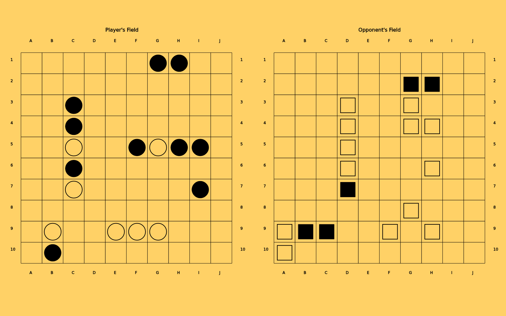
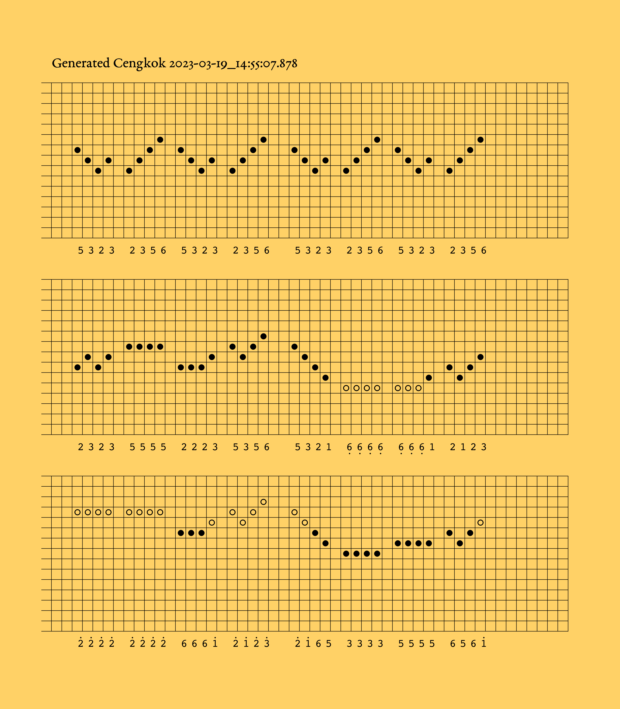

The theme of my work is musical game through the browser. I name the work “Tarung” (Indonesian: battle) to reflect its competitive nature but emphasizing playful aspect of it as a game. Although the players will oppose each other, they still have to cooperate to a certain degree to make the game “playable”. The game piece is intended to be performed live, with audience watching the musicians playing the game.
For me, a web browser is a window that connects us to another place. Through this window we can interact with another person or information regardless of our geographic position. It gives hope on the distribution of knowledge and transcultural understanding of human kind. A game is enjoyable and a good icebreaker. In a playful setting, one can build interpersonal relationship and learn from each other. The process of learning is always fun if it uses game as a media. In the shadow of war, still existing social injustice, and many humanitarian challenge, we need more means to make us humane that transcends political and cultural boundaries.
In Tarung, three musicians will participate in a game with similar mechanism as the game Battleship.

Two musicians take the role of opposing players, while one musician takes the role of a judge. Two grids of 10 by 10 size are available for each of the opposing players, on which they place their “battleships”. The goal is for each of the musician guessing the location of the opponents ship’s location by naming the grid coordinate, and eliminate all of the opponent’s ship. To guess the grid, the player has to select the grid they want to target. When selecting a grid, a digital graphical score unique to that grid will be present to the player. The player will has to play the digital score present to them. The opposing player will have to answer to this played music. A digital score will be presented to this opposing player which depends on the targeted grid. If the grid contains part of his battleship, a “hit” phrase will be presented. Otherwise, a “missed” phrase will be presented. The players will take turn until one of them is running out of battleships.
The judge’s role is to give an “accompaniment” along with the electronic drone part of the music. The judge will also keep track of the battle situation among the two players, and give clear hint on the stage of the game. The game is divided into stages corresponding to the game, cued also by the accompanying music: The opening of the game, which is played together, the initial stage, the climax, where at least the game is about halfway done, the conclusion, when the game is at its decisive moment, and the closing stage, when the game has a winner and all musicians play together again. The generative electronic part will vary according to the density of its sonic events and its perceived tempo.
Supercollider.I plan to use several compositional tools available in Javanese music. The instrumentation will be adjusted for the ensemble of the festival, i.e., keyboards, saxophone, clarinet, and electronics. However, any type of instrument should be able to perform it (with varying degree of adaptation). First is the idea of the short melodic phrase (cengkok). The cengkok is usually used to gives hint on how to idomatically improvise on a given melodic frame. Each of the grid of the player will contain combinations of this cengkok as a base for improvisation. The role of the players will be given to the saxophone and clarinet instruments.
The keyboard instrument will give accompaniment along with the generative electronic drone. Here, along with the idea of tempo (laya), I will play with the idea of rhythmic density (irama), i.e., how is the pulse’s relation to the smallest unit of rhythm played by the instrument. Repetitions of the ground melodic frame will be given variation by simply changing the density and the rule of realizing it by means of the cengkok. A certain stochastic process will be introduced in the selection of cengkok.

neoscore.For the digital score, a mixture of the cipher notation common in Javanese music (Kepatihan notation) and a graphic notation will be used. This is to make the score more accessible also in the hope to make it applicable cross-culturally.
The game interface for the players and the judge will be made with
p5js, using p5.party, a library to create networked multiuser game.
To manage different interface for each performers, the library
p5.scenemanager will be used. Keeping the festival theme, I purposely
only use web technology to create the electronic music part. I plan to
do research on the possibilities writing music using p5.sound library,
WebAudioXML parser library, or Tone.js. The graphical digital score
will be made using the Python library neoscore.
Each of the musician will need a screen for their game board and to
display their digital score. An additional grid interface (Launchpad
MIDI controller or similar) or a tablet with control surface (via, e.g.,
Open Stage Control) is needed to control the grid of the game. For the
musician who joins remotely, they will interact through the browser on
their game board and with system for audio network performance such as
JackTrip.
The audience who are present at the performance space will be able to see the true location of all the battleships of all players, and the number of battleships left. In addition, the musician who are performing remotely will also be shown. For the audience who watch the performance remotely, the broadcast of that screen and the performance situation will be shown.
The performance is a hybrid one: in person and online. The technical requirement will be as described above.
If the project is to be realized, at least three area of the development needs to be worked on. First is the composition of music materials, second is the technical implementation of interfaces and game mechanic, third is the testing of the sonic materials as well as the technical implementation. The first area will be done first, primarily between April-May 2023. The second area will be in May, while the third area will be between May and early June 2023.